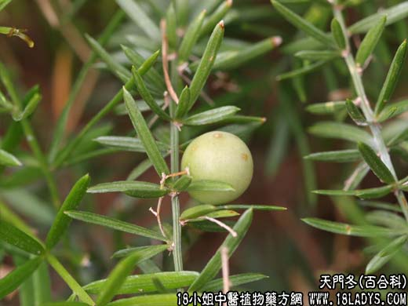

【中药概述】
天门冬为百合科草本植物天门冬的块根。甘、苦，寒。归肺、肾经。
1．清肺润燥：用于阴虚肺燥的干咳痰粘、劳热咳嗽或热病伤阴的咽干口渴等，如（天门冬汤、三才汤）、（<张氏医通>二冬膏）。
2．滋肾降火：用于阴虚潮热、盗汗、遗精、脚痿等，如（三才封髓丹）。
【应用与配伍】
1．用于阴虚肺热的燥咳或劳嗽咳血。能养阴清肺润燥。治燥热咳嗽，常配麦冬、沙参、川贝母等同用，治劳嗽咳血，或干咳痰粘，痰中带血，常配麦冬、川贝母、生地黄、阿胶等同用。
2．用于肾阴不足，阴虚火旺的潮热盗汗、遗精，内热消渴，肠燥便秘等症。能滋肾阴，清降虚火，生津润燥。治肾虚火旺，潮热遗精等，常配熟地黄、知母、黄柏等同用；治内热消渴，或热病伤津口渴，常配人参、生地黄等同用，如《温病条辨》三才汤；治热伤津液的肠燥便秘，可与生地黄、玄参等配伍。
【药效鉴别】
麦门冬功在上、中焦，不仅润肺，且能养胃清心，多用于肺胃阴虚，心烦失眠等证；天门冬功在上、下焦，既可润肺，又能滋肾，多用于肺肾阴虚之证。
【药理作用】
天冬有升高外周白细胞、增强网状内皮系统吞噬功能与体液免疫、广谱抗菌、止血和抗白血病等作用；天冬酰胺有镇咳和祛痰作用。心，趁热除去外皮，洗净，干燥。切薄片，生
用。
【化学成分】
含多量葡萄糖、天门冬酰胺、丝氨酸、苏氨酸、脯氨酸、甘氨酸等19种氨基酸，还含β-谷甾醇、粘液质，果糖等。
【用量用法】
6——15g，水煎服。
【使用注意】
脾虚便溏者不宜。